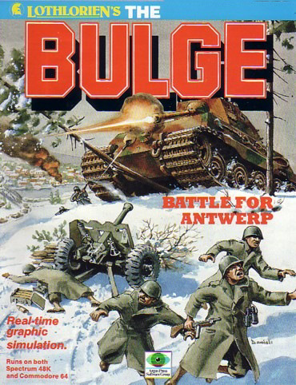
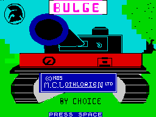
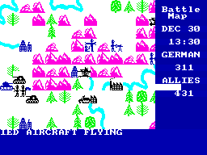

The Bulge


{kind=link}

| Publisher: | MC Lothlorie |
| Price: | £9.99 |
| Year: | 1985 |
| Source: | CRASH, Issue 18 |

One of the problems of being a software reviewer is that one tends to become very jaded about the games that are available, and the idea of actually playing computer games for recreation often goes down the plug hole. Which is why I find it such a pleasant surprise to find myself engrossed in a game, and wanting to carry on playing until I master it. The Bulge is such a game; it’s highly addictive, and that’s a very rare thing amongst strategy games.
I recently reviewed a game by Lothlorien called Overlords, which I said at the time looked likely to be their last independent release. The Bulge bears that out, and is the first release featuring Lothlorien in the role of design house only. The difference is incredible! It looks as though, freed from the incessant hassle of overdue bills, VAT returns, sales pitches to distributors, printing foul-ups and all the rest of it, Lothlorien have finally managed to concentrate their energies into the game.

The Bulge is without question the biggest (in terms of playing area) strategy game I’ve seen, it’s also incredibly fast (responses, cursor movement, scrolling) and works in simulated real time — half an hour in the game passes every 15 seconds or so. The game is very user-friendly to play, and has the facility to change the background and unit colours — very useful if you’re playing on a black and white TV (see the review of Midway for more thoughts on this!). It can be played as a one player or two player game, and for once neither game loses out.
The scenario follows history pretty closely: the Germans, in a last ditch attempt to avert the course of the war (in December 1944) launched a massive attack at a weak point in the Allied front line which was then lying roughly along the line of the current German/French border. The intention was to break through the Ardennes — a fairly mountainous forest area — and push on towards Antwerp.
The game presents an accurate representation of the terrain, and a major feature is the weather — in the real Battle of the Bulge, the heavy snow that fell over Christmas was a major factor in stopping the German advance and in the game it can play an equally decisive role. The playing area is (I think) 65 x 100 units, and you have a fully scrolling map window of 24 x 24 units. You also have a ‘strategic’ map window which shows you about a quarter of the total playing area at once, and you can swap between the two. Using a cursor, you move around the map, giving each of your units directional orders. They move towards their allocated target until told otherwise; combat is determined by strength of numbers and a few other factors, such as infantry in towns, gaining extra defensive power from the town.

Placing your cursor over a unit will cause its strength to be displayed on screen, so it is possible to keep track of relative strengths; but I have so far found that the game moves so fast (even with pausing at every opportunity!) that I have been forced to conduct a mad scramble eastwards to try and contain the advance of the Germans (you can play the German role if you want). At the start of the game each side has around thirty units, and reinforcements arrive during the game; the allies have only two unit types, infantry and armour, while the Germans have both artillery and mobile artillery as well. Unit defeats are shown on a continual scrolling headline on the screen, as are the weather forecasts, and news of reinforcements.
It can be difficult to keep up with all the information being pumped out at you, and play the game at the same time, but it’s reassuring to note that the enemy apparently makes mistakes too — not taking the easiest routes, for example. The graphics are clear and crisp, and the colour-changing facility is a boon. The overall presentation has improved immeasurably since Lothlorien’s earliest outings, and the influence of Argus on aspects such as pack and booklet design is discreet and totally beneficial. This is one collaboration that I can only applaud — and if Argus’ involvement means you will actually see The Bulge in your High Street, then it’s even better.
If I wanted to find a couple of points in the game to complain about, I could — I mean, obviously it’s not perfect, but simply the overwhelming scope and power of the game would make objections niggardly. Lothlorien have come good at last.
Overall Verdict: A CRASH Smash. An excellent Wargame.